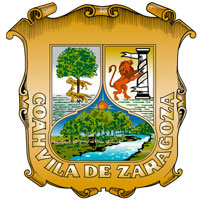

El nombre de Coahuila deriva de voces nativas usadas para nombrar a los originarios de la región; de ahí se derivaron diversos nombres como Cuagüila o Cuauila. Algunos historiadores piensan que significa "víbora que vuela", "lugar de muchos árboles" y otros señalan que quiere decir "el lugar en donde se arrastran las serpientes". El nombre oficial del Estado es Coahuila de Zaragoza, en honor del General Ignacio Zaragoza. El año de 1521 marcó el inicio de la verdadera conquista de México con la llegada de miles de inmigrantes españoles, que se dispersaron por toda la Nueva España. Comisionado por el gobernador de la Nueva Vizcaya y al frente de una partida de soldados, Alberto del Canto fundó la villa del Saltillo en 1577. Años más tarde, en 1598, el capitán Antón Martín de Zapata y el jesuita Agustín de Espinoza fundaron oficialmente Santa María de las Parras, hoy Parras de Las Fuentes. Las dos poblaciones se hallarían hasta poco más de un siglo después bajo la jurisdicción del gobierno de la Nueva Vizcaya. En solo 56 años la labor de exploración, conquista o fundación se había desplazado al norte (desde México a Saltillo) 850 kilómetros. A lo que hoy es Monclova, penetró en 1583 la trágica expedición de don Luis Carvajal y de la Cueva, quien a orillas del río levantó un asentamiento con el nombre de Nueva Almadén. Hasta ese momento el avance colonizador había sido progresivo y sistemático. Sin embargo, la oleada colonizadora se detuvo durante casi un siglo y ni siquiera esta primera fundación, la de Almadén, logró permanecer. Poco después de la llegada de Carvajal a la hoy Monclova, la población quedó abandonada por el constante acoso de los indios. En las siguientes décadas fracasaron no menos de nueve intentos de repoblar el sitio. Abundaban los grupos de indios bárbaros divididos en numerosas parcialidades o rancherías. Así lo consignaron los cronistas españoles que llegarían más tarde. El más notable de todos los misioneros en el centro y norte de Coahuila fue fray Juan Larios, franciscano de profunda fe, sincero amor apostólico y, sin duda, gran fortaleza física, logró con su catecismo y su devoción lo que no pudieron personajes que usaron la fuerza y las armas: establecer al norte de Monclova las primeras poblaciones de carácter permanente. A fines de diciembre de 1674, los franciscanos salieron de lo que alguna vez fuera Nueva Almadén con destino al norte. Un mes después se les unió el Justicia Mayor de la villa del Saltillo, Francisco de Elizondo con 30 hombres, cuyos apellidos quedaron desde entonces ligados a la historia de Coahuila: Diego Ramón, Fernando del Bosque, Diego Luis Sánchez Navarro, Ambrosio de Cepeda, Rodrigo de Morales y Juan de Aguirre. En el punto de reunión fundaron la misión de San Ildefonso de la Paz, el 28 de enero de 1675. La región se estabilizó entonces en las décadas siguientes, en particular bajo el gobierno de Gregorio de Salinas Varona, entre 1692 y 1705, quien reforzó el control sobre los indios multiplicando las reducciones y asentó la presencia de la Iglesia. El clima es generalmente seco y semi-cálido a cálido extremoso en gran parte del estado de Coahuila, con algunas variantes a través de las regiones del estado. La vegetación de Coahuila es muy variada. Su desarrollo depende del clima, tipo de suelo, altura sobre el nivel del mar, y precipitación pluvial. En las partes altas de la sierra abundan los pinos, pinabetes, encinos y cedros. En las partes bajas hay mezquites, huizaches, yucas, nopales, magueyes, cactus y lechuguillas. Otras plantas que crecen en el estado son: orégano, árnica, albahaca, cedro, nogal, fresno, álamo, peyote, biznaga, cenizo, sábila, Mora, Jujube, Durazno, Aguacate, Membrillo, Higuera, Mispero, Chile piquin, Túna, Granado, Tejocote, Chile piran, gobernadora, La fauna varía dependiendo de la región natural. A través de las sierras, cañadas y llanos del estado habitan distintas especies. En matorrales: tlalcoyote, gato montés, zorra del desierto, rata canguro, cachorrito de Cuatro Ciénegas, lagarto-escorpión de Lugo y perrito de las praderas. En los pastizales: borrego cimarrón, ciervo rojo, puma y armadillo. En el bosque: murciélago, oso negro, musaraña y zorrillo. En los ríos: mojarra y nutria. Animales en peligro de extinción: berrendo, bisonte americano, topo, carpa, puerco espín, codorniz y coyote.
